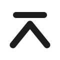
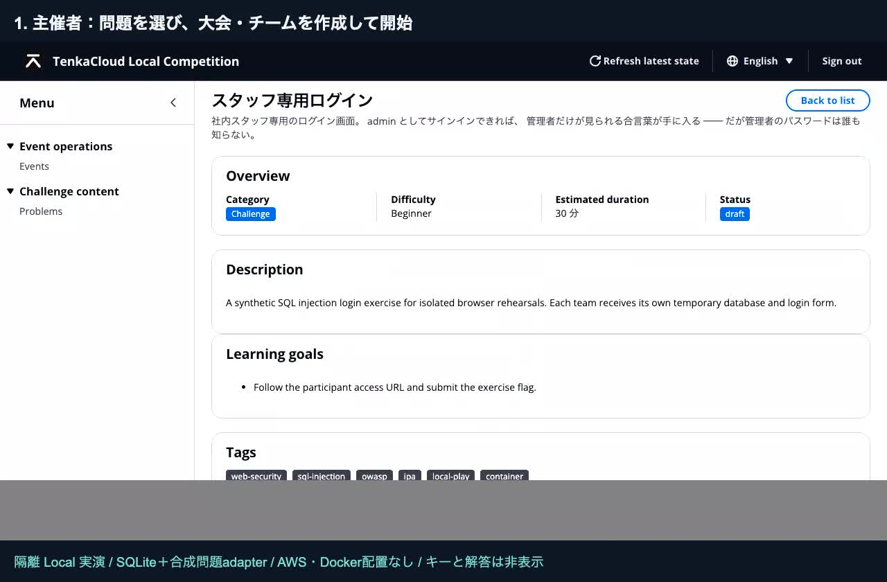

Singularity Society BootCamp #4 発表会 · 2026年11月15日 · 下書き（当日までに更新します）

TenkaCloudAWSのGameDayやISUCONのような、手を動かして学ぶクラウド演習を開くためのOSS。
- Challenge
- 問題を解き、回答を提出する。
- Battle
- 稼働状態や競技中の操作を判定し、チームで得点を競う。
- 主催者
- 大会・採点・問題集を、1つの管理画面で運営する。
冨田 進 / susumutomita
デモ
ここからは、実際に動かします。
あとから試すなら：ブラウザで触れるデモ（AWS不要） · 目指せクラウドマスター
BootCampでの変化
反応をもらって、開き方を作り直した。
- 6/14 キックオフで発表隔離したAWS環境で問題を解く、演習基盤として始めた。
- 8〜9月 外に出して、反応をもらったTenkaCloud #0（8/27）と#1（9/17）を開催し、JAWS-UG横浜でLT（9/18）。CCoEのコミュニティでは、数百円でも開催が見送りになった。
- 10/7 主催者のPC 1台で開けるようにした
make localで、AWSアカウントなしで大会を開ける（v2.0.0）。 - 10/27 ブラウザで遊べるゲームを公開目指せクラウドマスター。登録もAWSアカウントも要らない。
TenkaCloud
一緒に遊んで、問題を育ててください。
技術書：自分で作るクラウド競技
Appendix
ここから Appendix
発表のあとは、この資料だけで試せるように。
- TenkaCloud と、演習の使い方
- 主催者の流れとローカル開催
- ブラウザのゲーム・AWS 上の開催
- BootCamp の記録と、開発中のもの
本編はここまでの4枚。10分（発表7分＋質疑3分）の発表では、この先へ進みません。
Appendix
クラウド演習を、いつでも開けるように。
TenkaCloud は、GameDay や ISUCON のように手を動かす演習を、主催者が開くための OSS です。
- 主催者
- 問題を選び、大会・チーム・採点を管理する。
- 参加者
- ブラウザで入り、チームで解答して、得点を確かめる。
- 始め方
- まずブラウザで体験。自分の大会は PC 1 台のローカル開催から。
OSS ライセンスは Apache 2.0。AWS を使う開催では、クラウド資源の利用料が別途かかります。起動ガイド
Appendix
誰が、どう使う？
LP「企業での活用」の6つの使い方。受講者と目的に合わせて問題を選びます。
- 全社員 / 非エンジニア
- 不審なメールなど、だまされる場面をチームで考える。
- 新任エンジニア
- 短い Challenge から、環境操作を伴う課題へ。
- SRE / SOC
- 対応する Battle 教材で、状況判断を練習する。
- 社内イベント
- 大会・チーム・問題・得点をまとめて運営する。
- 社内ネットワーク
- PC 1 台から開催。別端末の参加条件はガイドで確認する。
- 定着の確認
- 時期を空けて再び出題し、結果を振り返る。
企業での活用 · 運営ガイドと対応範囲。用途の例であり、学習効果を保証するものではありません。
Appendix
Challenge と Battle
- Challenge
- 問題を解き、指定された回答やチェックポイントを提出。採点結果を得点に反映します。
- Battle
- 競技中の行動や状態で得点を競います。暗号バトルではチーム共通の試合状態を使います。
- 問題集
- TenkaCloudChallenge に問題文・実行環境・採点の定義を収録。使える問題は開催方式と固定したカタログで確認します。
AWS endpoint の稼働率型 Battle はクラウド復旧の残件です。問題集に存在するだけで現行環境で開催できるとは限りません。
Appendix
問題を選ぶところから、撤収まで。

Appendix
主催者の PC 1 台で開く。
make local で、AWS アカウントなしで大会を開けます（v2.0.0〜）。
保存先は SQLite。Docker を使う演習には Docker も必要です。
別端末からの参加は LAN / Tailscale の条件をガイドで確認してください。停止の make down は大会データを保持します。起動動画は旧手順を含むため、ここでは現在のガイドを案内します。
Appendix
登録なしで、まずブラウザから。
- ブラウザで触れるデモ
- 旧版の紹介デモ。画面を触って競技の雰囲気を体験。現在の大会とは認証・得点・操作が異なります。
- 目指せクラウドマスター
- API の番人になり、不審なリクエストを見分けるゲーム。
- メールの間違いさがし
- メールの手がかりから、不審な点を探すゲーム。
どれも登録・AWS アカウントは不要です。
学習用のブラウザ体験です。実際の AWS API 操作や通信の遮断は行いません。
Appendix
AWS 上での開催は、別の選択肢。
主催者基盤から、登録したチームの AWS Role と ExternalId を検証し、対応する問題環境を配置します。
現行クラウドは hello-world / Cryptography Battle が対象。対応範囲・権限・費用を確認して開催します。
録画は当時の操作です。現在の手順は運営ガイドへ。ローカル開催は AWS を使いません。
YouTube で見るAppendix
BootCamp の5か月を、記録から。
- 6/14 キックオフAWS 演習基盤と StackStack を発表。当時の資料を作った PR #1739に構成と実装範囲を記録。
- 8〜9月 外に出して反応をもらう#0（8/27）、#1（9/17）の開催資料、JAWS-UG 横浜 LT（9/18）。CCoE での開催見送りと設計変更の経緯はPR #3485。
- 10/7 PC 1 台からの開催へv2.0.0 リリース。ローカル起動とチームキー参加を確認したソース配布。
- 10/27 ブラウザで遊べる入口へv2.6.0 リリースに、目指せクラウドマスターの段階的な初心者導入と本番確認を記録。
Appendix
いま作っているもの：Simulator
開発中 · 未リリース
TenkaCloud Simulator は、実際の AWS を使わず、手元で AWS の操作を練習するために開発しているシミュレーターです。
この資料で紹介した、公開済みのゲームや開催基盤とは別の開発です。
公開済みの機能としては案内していません。利用方法と対応範囲は、今後のリリースで確認してください。